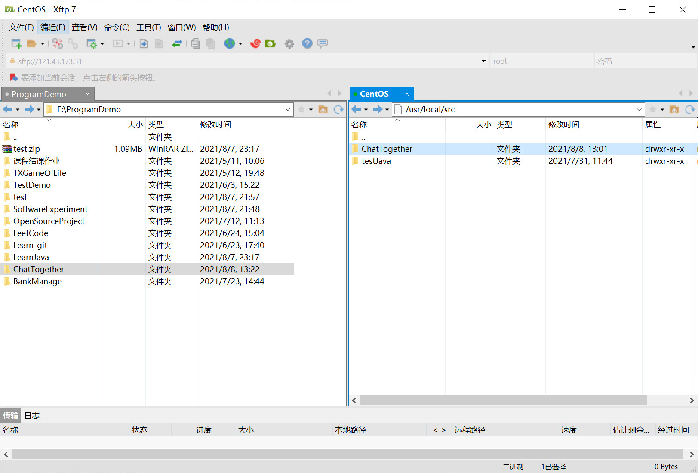

TCP协议也是应用最广泛的协议，许多高级协议都是建立在TCP协议之上的，例如HTTP、SMTP等。
IP协议是一个分组交换，它不保证可靠传输。而TCP协议是传输控制协议，它是面向连接的协议，支持可靠传输和双向通信。TCP协议是建立在IP协议之上的，简单地说，IP协议只负责发数据包，不保证顺序和正确性，而TCP协议负责控制数据包传输，它在传输数据之前需要先建立连接，建立连接后才能传输数据，传输完后还需要断开连接。TCP协议之所以能保证数据的可靠传输，是通过接收确认、超时重传这些机制实现的。并且，TCP协议允许双向通信，即通信双方可以同时发送和接收数据。
JAVA网络编程——TCP协议
Socket套接字
Socket 的原意是“插座”，在计算机通信领域，Socket 被翻译为“套接字”，它是计算机之间进行通信的一种约定或一种方式。通过 Socket 这种约定，一台计算机可以接收其他计算机的数据，也可以向其他计算机发送数据。
当操作系统接收到一个数据包的时候，如果只有IP地址，它没法判断应该发给哪个应用程序，所以，操作系统抽象出Socket接口，每个应用程序需要各自对应到不同的Socket，数据包才能根据Socket正确地发到对应的应用程序。使用Socket套接字可以在IP地址的不同的端口下进行通信。
一个Socket就是由IP地址和端口号（范围是0～65535）组成，可以把Socket简单理解为IP地址加端口号。端口号总是由操作系统分配，它是一个0～65535之间的数字，其中，小于1024的端口属于特权端口，需要管理员权限，大于1024的端口可以由任意用户的应用程序打开。
使用Socket进行网络编程时，本质上就是两个进程之间的网络通信。其中一个进程必须充当服务器端，它会主动监听某个指定的端口，另一个进程必须充当客户端，它必须主动连接服务器的IP地址和指定端口，如果连接成功，服务器端和客户端就成功地建立了一个TCP连接，双方后续就可以随时发送和接收数据。
因此，当Socket连接成功地在服务器端和客户端之间建立后：
- 对服务器端来说，它的Socket是指定的IP地址和指定的端口号；
- 对客户端来说，它的Socket是它所在计算机的IP地址和一个由操作系统分配的随机端口号。
C/S通信模式，TCP网络编程初探
Server端：
1
2
3
4
5
6
7
8
9
10
11
12
13
14
15
16
17
18
19
20
21
22
23
24
25
26
27
28
29
30
31
32
33
34
35
36
37
38
39
40
41
42
43
44
45
46
47
48
49
50
51
52
53
54
55
56
57
58
59
60
61
62
63
64
65
66
67
68
| package Com.Dcm.Chat.Server;
import java.io.*;
import java.net.ServerSocket;
import java.net.Socket;
import java.nio.charset.StandardCharsets;
import java.time.Instant;
import java.time.ZoneId;
import java.time.ZonedDateTime;
public class ServerDemo {
public static void main(String[] args) throws IOException {
ServerSocket ss = new ServerSocket(8866);
System.out.println("server is running...");
while(true) {
Socket sock = ss.accept();
System.out.println("connected from " + sock.getRemoteSocketAddress());
Thread t = new Handler(sock);
t.start();
}
}
}
class Handler extends Thread {
Socket sock;
public Handler(Socket sock) {
this.sock = sock;
}
@Override
public void run() {
try (InputStream input = this.sock.getInputStream()) {
try (OutputStream output = this.sock.getOutputStream()) {
System.out.println("Client " + sock.getRemoteSocketAddress() + " has connect to Server "
+ sock.getLocalSocketAddress() + " Success!");
handle(input, output);
}
} catch (Exception e) {
try {
this.sock.close();
} catch (IOException ioe) {
ioe.printStackTrace();
}
System.out.println("client disconnected.");
}
}
private void handle(InputStream input, OutputStream output) throws IOException {
var writer = new BufferedWriter(new OutputStreamWriter(output, StandardCharsets.UTF_8));
var reader = new BufferedReader(new InputStreamReader(input, StandardCharsets.UTF_8));
writer.write("hello\n");
writer.flush();
while(true) {
String s = reader.readLine();
if (s.equals("bye")) {
writer.write("bye\n");
writer.flush();
break;
}
Instant ins = Instant.now();
ZonedDateTime zdt = ins.atZone(ZoneId.systemDefault());
System.out.println(zdt + " >>> " + s);
writer.write("ok: " + s + "\n");
writer.flush();
}
}
}
|
Client端：
1
2
3
4
5
6
7
8
9
10
11
12
13
14
15
16
17
18
19
20
21
22
23
24
25
26
27
28
29
30
31
32
33
34
35
36
37
38
39
| package Com.Dcm.Chat.Client;
import java.io.*;
import java.net.Socket;
import java.nio.charset.StandardCharsets;
import java.util.Scanner;
public class ClientDemo {
public static void main(String[] args) throws IOException {
Socket sock = new Socket("121.43.173.31", 8866);
try (InputStream input = sock.getInputStream()) {
try (OutputStream output = sock.getOutputStream()) {
handle(input, output);
}
}
sock.close();
System.out.println("disconnected.");
}
private static void handle(InputStream input, OutputStream output) throws IOException {
var writer = new BufferedWriter(new OutputStreamWriter(output, StandardCharsets.UTF_8));
var reader = new BufferedReader(new InputStreamReader(input, StandardCharsets.UTF_8));
Scanner scanner = new Scanner(System.in);
System.out.println("[server] " + reader.readLine());
while(true) {
System.out.print(">>> ");
String s = scanner.nextLine();
writer.write(s);
writer.newLine();
writer.flush();
String resp = reader.readLine();
System.out.println("<<< " + resp);
if (resp.equals("bye")) {
break;
}
}
}
}
|
部署到服务器进行测试：
在部署到本地（localhost）测试成功后，我尝试在阿里云服务器上运行Server测试。
首先，使用xftp建立连接传输项目到服务器：

之后使用Xshell连接到服务器对项目进行操作：
输入相关代码启动服务：
注意：需要在阿里云控制台启用相关的端口，本次Server端使用8866端口，需要提前开启！
1
2
3
| [root@CentOS ~]# cd /usr/local/src/ChatTogether
[root@CentOS ChatTogether]# cd out/production/ChatTogether/
[root@CentOS ChatTogether]# java Com.Dcm.Chat.Server.ServerDemo
|
使用IDEA开启Client端，向Server端传输数据：
客户端：
1
2
3
4
5
6
7
8
9
10
11
12
13
14
15
| D:\SourceFiles\Java\jdk-11.0.5\bin\java.exe "-javaagent:D:\SourceFiles\JetBrains\IntelliJ IDEA 2021.1.1\lib\idea_rt.jar=61812:D:\SourceFiles\JetBrains\IntelliJ IDEA 2021.1.1\bin" -Dfile.encoding=UTF-8 -classpath E:\ProgramDemo\ChatTogether\out\production\ChatTogether Com.Dcm.Chat.Client.ClientDemo
[server] hello
>>> 你好，hello world！
<<< ok: 你好，hello world！
>>> 不要回答！
<<< ok: 不要回答！
>>> 消灭人类暴政，世界属于三体！
<<< ok: 消灭人类暴政，世界属于三体！
>>> 我们是同志了！
<<< ok: 我们是同志了！
>>> 北海，要多想！
<<< ok: 北海，要多想！
>>> 没关系的都一样。
<<< ok: 没关系的都一样。
>>>
|
服务端：
1
2
3
4
5
6
7
8
9
10
| [root@CentOS ChatTogether]# java Com.Dcm.Chat.Server.ServerDemo
server is running...
connected from /119.102.250.226:61814
Client /119.102.250.226:61814 has connect to Server /172.30.89.4:8866 Success!
2021-08-08T20:44:06.982581+08:00[Asia/Shanghai] >>> 你好，hello world！
2021-08-08T20:44:14.471235+08:00[Asia/Shanghai] >>> 不要回答！
2021-08-08T20:44:26.662957+08:00[Asia/Shanghai] >>> 消灭人类暴政，世界属于三体！
2021-08-08T20:44:33.162085+08:00[Asia/Shanghai] >>> 我们是同志了！
2021-08-08T20:44:47.791487+08:00[Asia/Shanghai] >>> 北海，要多想！
2021-08-08T20:44:59.515964+08:00[Asia/Shanghai] >>> 没关系的都一样。
|
参考：廖雪峰Java教程 TCP编程 https://www.liaoxuefeng.com/wiki/1252599548343744/1305207629676577